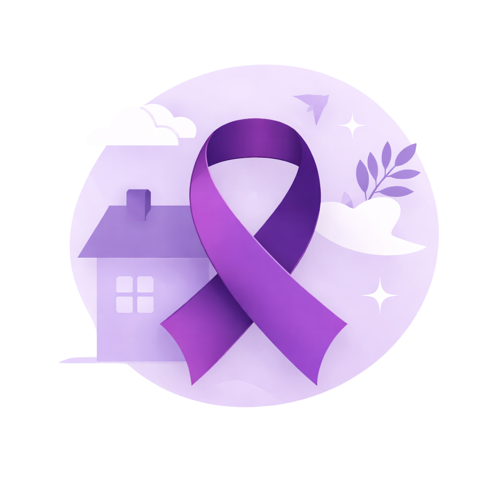

Física
Agressões como empurrões, tapas, socos, chutes, queimaduras ou estrangulamento.
A conscientização é o primeiro passo para o combate à violência doméstica. Encontre aqui apoio, conheça seus direitos e saiba como denunciar de forma segura.
Conteúdo informativo com foco em orientação e conscientização.

A violência doméstica é um problema social grave que afeta mulheres de diferentes idades, realidades e contextos. Muitas vezes, acontece dentro de casa e se mantém pelo medo, pelo silêncio e pela dependência emocional ou financeira.
Informação, acolhimento e apoio são fundamentais para romper o ciclo da violência e fortalecer a rede de proteção.
A violência doméstica pode se manifestar de diferentes formas. Identificar os sinais é um passo importante para buscar ajuda.
Agressões como empurrões, tapas, socos, chutes, queimaduras ou estrangulamento.
Ameaças, humilhações, manipulação, chantagem, controle e isolamento social.
Constranger, forçar ou impedir escolhas relacionadas à vida sexual e reprodutiva.
Destruir objetos, esconder documentos, reter bens ou controlar recursos da vítima.
Controlar o dinheiro, impedir de trabalhar ou limitar a autonomia financeira.
Ofensas, xingamentos, calúnia, difamação e acusações que ferem a reputação.
Mulheres em situação de violência doméstica têm direito à proteção, ao acolhimento e ao acesso à justiça.
A Lei Maria da Penha estabelece medidas de proteção, formas de denúncia e mecanismos para combater a violência doméstica e familiar contra a mulher.
Ler a LeiEm situações de violência doméstica, a denúncia pode ser feita por canais oficiais de atendimento e emergência. Buscar ajuda é um passo importante para interromper a violência e garantir proteção.
Orientação, acolhimento e denúncias de violência contra a mulher.
Canal de emergência para situações de risco ou agressão em andamento.
Permite denúncia anônima, conforme a disponibilidade no estado.
Registro de ocorrência e encaminhamento para proteção da vítima.
Podem ser solicitadas para afastar o agressor e ampliar a segurança.
CRAS, CREAS, saúde e assistência social podem oferecer atendimento.